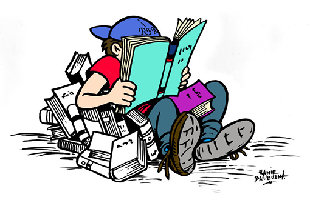
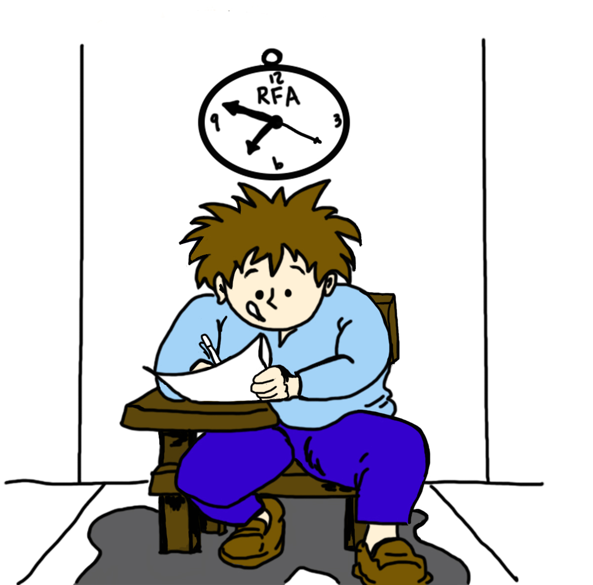
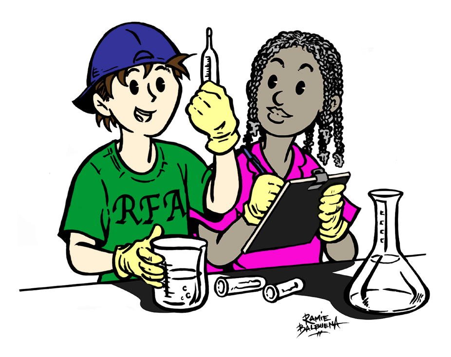
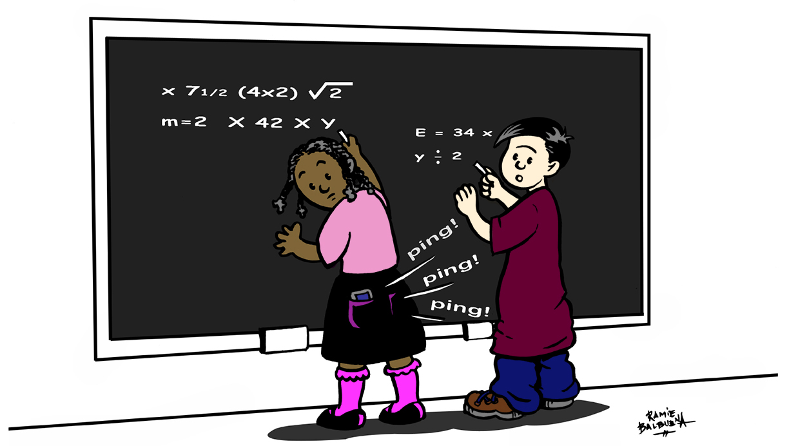

The Right to Be Literate: Literacy Is Learning for a Lifetime
PDF 
Do believe that if kids cant, don’t or won’t read...that they suffer throughout their school years? Do you want nothing more than to give them the gift of reading? Of course, you do. What’s next? The Right to Be Literate, book and professional development workshops, where teachers find lively strategies to use that invite, involve and inspire students to want to read; to want to know the secret of learning from books, to explore the magic of the written word and to see ideas clearly through visual literacy. Find the treasure trove of ready-to-use strategies for the k12 classroom that define our world through the act of reading, including Viewing and Presenting.
Objectives and Outcomes:
- 5-10 Strategies to Engage Students with Literacy.
- Threads Across Grade Levels and Disciplines.
- Examples for Elementary, Middle and High School Classrooms.
Book: The Right to Be Literate: Six Essential Literacy Skills.
Testimonial:
This was probably my favorite presentation of the week. Not only were Brian and Robin very dynamic speakers, I liked their format, how they had us practice almost all of the strategies they were suggesting. They made a great point when they said teachers are more likely to use a strategy in their classroom if they are comfortable with it. Jackie Meghan-College of Education
Writing is Deep Thinking: Write Every Day in Every Way
PDF 
Literacy encompasses four critical skills: reading, writing, speaking and listening, viewing and representing. One approach to literacy that is sometimes overlooked is motivating student reading through their writing. To be a good writer, of course students need to write everyday, in every way. The writing then becomes the reading that is relevant, interesting and understandable. In addition, students learn to reread, revise and refine their first drafts for “personal best” effort to turn in. From One Minute Write to the 1000 word essay, six distinct strategies help students learn how to scaffold the writing and reading for increased comprehension.
Objectives and Outcomes:
- Write to Read, Read, to Write.
- Six Fail-Safe Writing Strategies.
- Learn to Reread, Revise and Refine.
Book: The Right to Be Literate: Six Essential Literacy Skills.
Testimonial:
If you want a matter-of-fact, research-oriented individual who presents evidence-based information, is innovative, technology-driven, and knows how to relate to an audience on every level, then Brian Pete is the gentleman who will “wow” your administrators and teachers. Patricia Wellman- Instructional Coach.
Building Academic Vocabulary: Words, Fluency, Comprehension
PDF 
Words build fluency! Fluency builds comprehension! Comprehension builds understanding! The more teachers can develop background knowledge through enhancing academic vocabulary, the greater the chances are that students will be able to grasp new concepts and ideas in the various subject areas. “Background knowledge manifests itself as vocabulary knowledge” (Marzano). Using multimodal, instructional tools to introduce, revisit, review, retrieve and retain key concepts in the teaching, learning process, participants take away a dozen, ready-to-use vocabulary-building techniques for immediate classroom application.
Objectives and Outcomes:
- Learn how to unpack “big idea” concepts.
- Use higher order thinking skills with vocabulary.
- Explore games for building academic vocabulary.
Book: Literacy Matters: Strategies Every Teacher Can Use.
Testimonial:
Revisiting more than once the ideas/concepts/activities throughout the day. Fogarty and Pete were incredible. Alan Stark Wildwood Middle School.
Digital Screen-age Literacy: Viewing & Representing Strategies
PDF 
If literacy consists of processing codified text as a way to communicate via reading, writing, listening, speaking, and viewing and representing, then 21st Century literacy is literacy on steroids. In a world where the sheer volume of text is overwhelming and the speed of communications and digital interactions is blinding, 21st Century literacy is about how students learn to process this avalanche of information, not just for edutainment but also for honing their academic literacy skills in all content areas. They must learn to think, question the author, wonder about a confusing statement, hypothesize why the author has taken a specific stance, draw inferences about tonality and mood, and appreciate good literature in all its forms. Twenty-first century literacy is the expansive scope that takes a close look at the roles language and literacy play in our world. And the “right to be literate” implies that students will be able to participate fully in these endeavors as contributing members of an educated and literate society.
Objectives and Outcomes:
- Embracing the Digital-Rich Classroom
- 5 Viewing Strategies
- 5 Representing Strategies
Book:The Right to Be Literate: Six Essential Literacy Strategies.
Testimonial:
We would like to invite you back to facilitate a workshop on Differentiated Learning with a focus on integrating digital rich-applications as well as higher order thinking. Sandra Burn NY, NY.